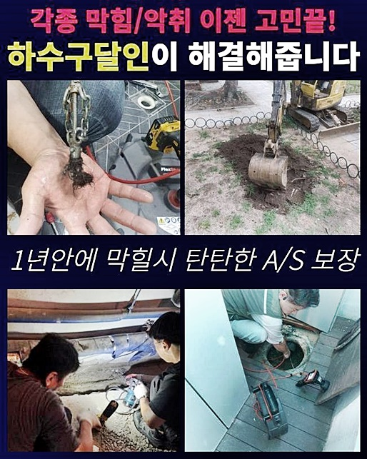
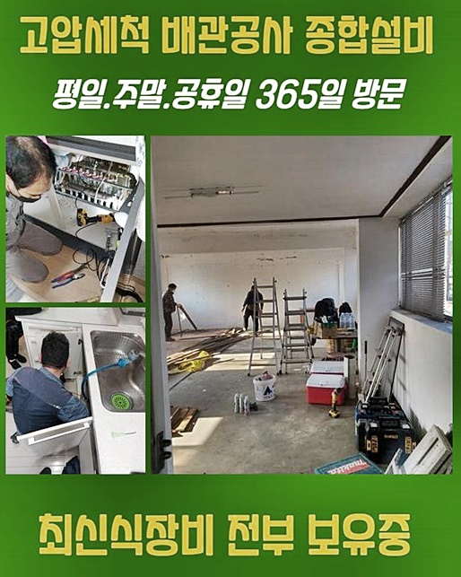
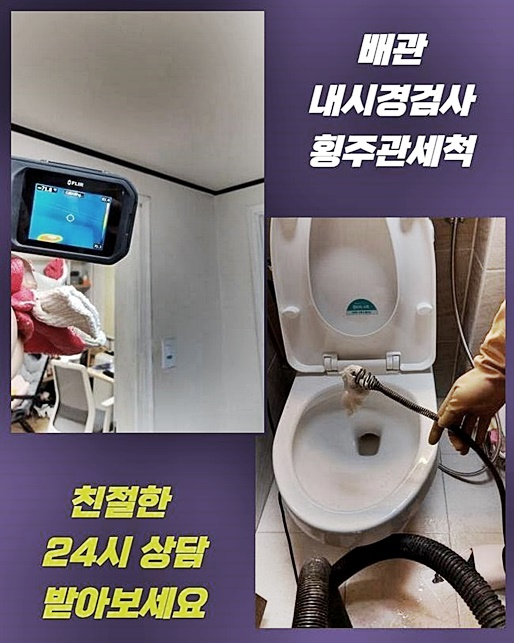
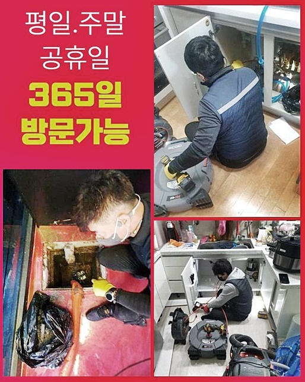
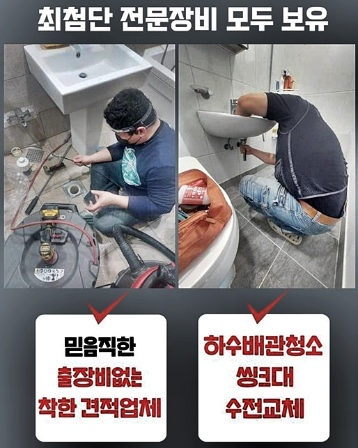
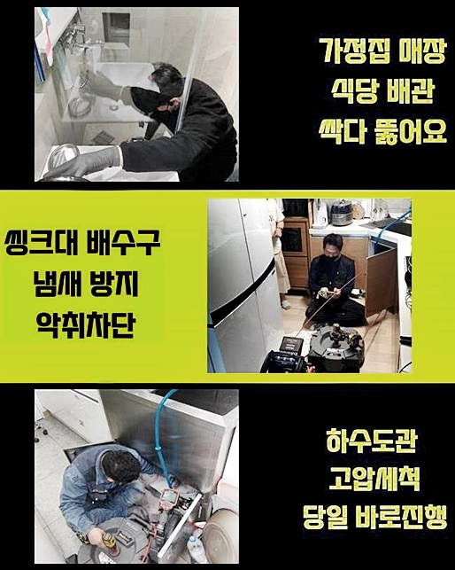

🏠 중구 충무로화장실역류 예관동 배관뚫기 해결방법
용인 하수구막힘 전문 시공 후기

📋 작업 개요
- 위치: 용인
- 서비스 유형: 하수구막힘, 배관막힘, 누수수리, 역류해결, 뚫는업체, 배관청소, 고압세척
- 작업 일시: 2024. 7. 21. 11:31
- 업체명: 하수구수사대 (010-5615-2118)
🔍 문제 상황
중구 충무로화장실역류 예관동 배관뚫기 해결방법
배관이 제 기능을 못할 때엔 최대한 신속히 방안에 대해 꾀하는것이 좋겠습니다
이러한 문제를 내버려둘때 갑자기 물들이 솟구칠 수도 있고 누수되는 증상으로도 이어지게 되면서 작업에 방해요소가 야기될 수 있겠습니다
배수구에서 역류해버리는 증세가 발생된 경우일땐 할 수 없겠지만 문제들이 야기되기전 예방차원에서 전문진의 손길을 거쳐 해결해 보시는 것이 좋은데요
금일 달려간 현장의 경우 주거지와 상가들이 혼재한 경우였는데요 위와같은 건축형태면 복잡한 양상들을 갖고있는 현장이 많으므로 유선으로는 안내드릴 수 있는 사안이 제한되어 있어요
위같은 상황 탓에 정확한 연유를 짚어내기위해서 도착을 마치고 증상에 대해 안내합니다
당도하니 점포와 이어진 가정집 관로가 막히게되고 역류되는 증상들이 목격되었는데요
물이 솟구치는게 발현되면서 복잡성까지 결부될 시 적재적소 쓰이게 되는 장치의 운용이 수행되어야합니다
그렇기에 해당 상황에서는 필수적으로 이런저런 문제양상을 시정해낸 업체께 문의를 해보심이 좋겠습니다
찾아뵙고 고객의 내용전달을 바탕으로 문제들을 점검했어요
한정된 부분 외에 불현듯 부위별로 막힌것이면 진단대상에 포함되는 게 공용 배관이였습니다

🔎 원인 분석
💡 전문가 진단: 정밀 진단 장비를 사용하여 슬러지의 고착 여부를 판명하고 타격/세척 작업을 실시했습니다.
공동배수로를 들여다보기위해 주차공간 천정부에 위치하고있던 배수관으로 이동했습니다
공동하수관을 확실히 해결해도 메인배관들과 연결되어있는 관의 역류증세들이 수월하게 해결되요
허나 천장부분에 자리잡고있는 라인인 까닭에 일련의 과정을 해주기에는 위험이 따랐는데요
이런 경우일땐 작업대를 놓고 저희가 올라가죠
공동배수관이 막힌것이면 내부쪽을 빨아당겨 문제를 해결해주는 석션장치만으론 뚫어내는것이 어려워요
샤프트장치로 세척을 실시하거나 상황마다 고압분사 방법들이 실시되어야 하죠
무슨 방법들이 요구되는지 안쪽을 점검하고 왜 발생되었는지 알고자 내시경을 투입했습니다
내시경기기로 안측을 살피니 지금까지 쌓이게된 기름성분의 이물질들이 통로를 막는바람에 거꾸로 바깥으로 새어나오는 불상사가 발생한건데요
구간마다 빠져나가지를 못해 자연스럽게 가정과 이어져있는 개별배수관으로 배수시킨다면 오수는 걷잡을 수 없이 넘칠거에요
때문에 이 배수관을 의뢰자께도 전달하고서 작업을 실시했는데요
하수라인이 불그스름하게 보여지는데 이런식으로 관찰되는 이유들은 벽면에 슬러지들이 상당해서입니다
이물이 존재하지않는 하수관일 경우에는 이러한 모습없이 군더더기 없이 보여지지만 이렇게 잔해물이 가득하다면 내시경장비에 여과없이 목격됩니다

🔧 작업 과정
저희 하수구막힘의 업체가 간 장소의 문제를 시정해보고자 샤프트장치를 사용해주어도 마구잡이로 삽입하는게 아니라 당연하게도 배관 내부 배수관을 확인하며 작업을 이어나갑니다
아무래도 무턱대고 쑤셔넣는다면 배수관을 파손시키게 할 수 있을 뿐 아니라 잘못하면 누수증상이 야기되기에 경험이 많은 전문진에게 진행하시는 것이 좋은데요
플렉스 샤프트 내시경기기로 꽤 긴 기간에걸쳐 분쇄시키는 작업들을 실시했어요
저희배관해결사가 내방했던 장소의 이물들이 쌓이다못해 굳어진 이물들이였기에 꾸준한 과정이 수반되어야했습니다
메인집수라인에 막힘들이 발생된다면 뻗어있는 길이들이 기므로 군데군데 세척해주는 단계들을 진행합니다
해당 문제들을 해결하고자 한다면 화장실쪽과 멀지않게 자리한 적재시설과 함께 합쳐진 배수관을 재발의 여지가 없는채로하는 단계도 필요했습니다
점검구 부분을 즉각 개방하면 하수들이 떨어지게 될 불미스러운 일이 불가피하기에 비닐을 사용하여 보양도 빠트리지않고 실시했어요
아래부분으로 하수가 배출되도록 연결을 해보았어요
혹여 이런 부분까지 신경써주며 작업을 이어가지 않으면 단순히 통수는 가능할지라도 마무리들은 엉성할 수 있습니다
이것 또한 전문인이 배양하고있는 덕목이라 굳게 믿고있죠
찾아뵌 곳은 화장실쪽과 연결되어있는 하수관으로, 잔해들이 대량으로 있었죠 생활 중 발생되는 잔해들이 배수관 기능을 저해시키는게 보통이지만 있으면 치명적일 수 있는 이물들이 장애가 되는데요
내측을 살피니 샤프트기기론 올바르게 청소해주는게 어렵겠단 생각들이 스쳐 지나갔어요
이러한 때에는 적절한 크란즐기기들을 써서 세척하는것이 좋습니다
대형집수설비에 이용되는 것보다는 컴팩트하지만 성능들은 뛰어나므로 문제양상에 알맞는 기기들을 고르는것도 전문인력의 자질이라고 굳게 믿고있죠
뚫기를 이행함과 동시에 지점에따라 올바르게 청소되었는지 균열들이 없는지 진단하고 배수점검을 수행하였는데요
저희의 전문가가 내방했던 장소라면 내시경기기로 배수장애가 잠재워진건지 테스트들로 확인해주어야 완전하게 배수 작업이 행해진것이라고 볼수있겠습니다
마침내 오차없이 청소가 일단락되었습니다 의뢰인분에게 완벽히 하수관을 보여주고
여지껏 통수가 만만치않았던 의뢰인이 걱정을 내려놓을거란 생각해보니 뿌듯함이 가득했어요


✅ 작업 완료
문제가 생겨나서 수리 시 예상치 못한 이물까지 발견되요
증세가 나타났을때 서둘러서 처리할 수 있게 전문진에게 의뢰한다면 신속히 해결이 가능할지라도, 귀찮은 탓에 미룰 경우에 비용과 시간을 크게 소모하여 진행할지도 모릅니다
해결하기 힘든 상황들에 처해있더라도 저희의경우엔 언제라도 안정성있게 문제를 타파합니다
저희전문진은 점검을 바탕으로 적합한 작업방식을 수행하고있기에 걱정없이 맡기시면 됩니다
상가와 가정과 같은형태로 수도가 있어야하는 곳일 경우 어디가 됐든 청소해주는 것에 최선을 다하므로 언제라도지 주저없이 연락주세요!



⚠️ 베란다 누수 및 방수 관리 방법
- ✅ 비가 많이 올 때 창틀 주변이나 아래층 천장에 얼룩이 생기는지 정기적으로 확인해 보세요.
- ✅ 우수관 주변 실리콘 마감이 들뜨거나 깨진 틈새가 있는지 손상 여부를 수시로 체크하세요.
- ✅ 베란다 바닥 타일의 줄눈(메지)이 소실되면 그 틈으로 물이 침투하여 누수가 유발됩니다.
- ✅ 누수 의심 증상 발견 시 방치하면 아래층 손실이 커지므로 즉시 전문가의 진단을 받으십시오.
💡 핵심 정리
- 확실한 장비 작업(내시경 점검 및 샤프트 스케일링)으로 원인을 뿌리 뽑습니다.
- 작업 후 1년 이내에 동일한 부위 재발 시 100% 무상 A/S 서비스를 보장합니다.
- 서울 · 경기 · 인천 전 지역에 24시간 언제든 긴급 출동할 수 있도록 항시 대기 중입니다.
❓ 자주 묻는 질문 (FAQ)
🚨 용인 하수구막힘 문제로 고민이신가요?
정확한 원인 진단과 확실한 시공으로 재발 없는 해결을 약속드립니다.
24시간 긴급 출동 | 서울 · 경기 · 인천 전지역 | 1년 내 재발 시 무상 A/S